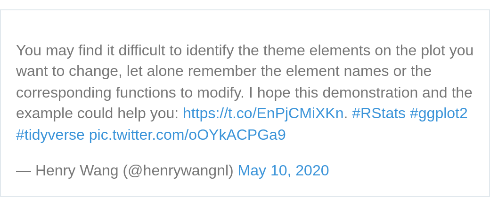

What this post is about?
ggplot2tips
History
Some time ago, lost through the deep arms of the internet 😎, I have found a great drawing with all the theme elements references of a plot within ggplot2.
But, as is well known, if you don’t save that, it will be lost forever.
Except when you have a great community in twitter, and there is a bunch of good people trying to help everyone!
Some time ahead…
I finally found it! Here it is:
I also found the post on her blog, with better quality images and/or a pdf file.
{kind=link}
The history continues…
More interesting: actually, she had her idea after this twitter post from Henry Wang:

And, he also made a nice post about the subject (where you can download his version of ggplot2 theme elements demonstration).
Finishing
That’s it, enjoy the creativity and good ideas from all these people, soon I’ll bring some more.
Thanks for the reading, cheers!
Session information
sessioninfo::session_info()─ Session info ───────────────────────────────────────────────────────────────
setting value
version R version 4.2.1 (2022-06-23)
os Ubuntu 20.04.5 LTS
system x86_64, linux-gnu
ui X11
language en_GB:en
collate pt_BR.UTF-8
ctype pt_BR.UTF-8
tz America/Recife
date 2022-10-13
pandoc 2.18 @ /usr/lib/rstudio/bin/quarto/bin/tools/ (via rmarkdown)
─ Packages ───────────────────────────────────────────────────────────────────
package * version date (UTC) lib source
chromote 0.1.1 2022-09-07 [1] CRAN (R 4.2.1)
cli 3.3.0 2022-04-25 [1] CRAN (R 4.2.0)
curl 4.3.3 2022-10-06 [1] CRAN (R 4.2.1)
digest 0.6.29 2021-12-01 [1] CRAN (R 4.2.0)
evaluate 0.17 2022-10-07 [1] CRAN (R 4.2.1)
fastmap 1.1.0 2021-01-25 [1] CRAN (R 4.2.0)
htmltools 0.5.3 2022-07-18 [1] CRAN (R 4.2.1)
htmlwidgets 1.5.4 2021-09-08 [1] CRAN (R 4.2.0)
httr 1.4.4 2022-08-17 [1] CRAN (R 4.2.1)
jsonlite 1.8.2 2022-10-02 [1] CRAN (R 4.2.1)
knitr 1.40 2022-08-24 [1] CRAN (R 4.2.1)
later 1.3.0 2021-08-18 [1] CRAN (R 4.2.0)
magrittr 2.0.3 2022-03-30 [1] CRAN (R 4.2.0)
processx 3.7.0 2022-07-07 [1] CRAN (R 4.2.1)
promises 1.2.0.1 2021-02-11 [1] CRAN (R 4.2.0)
ps 1.7.1 2022-06-18 [1] CRAN (R 4.2.1)
R6 2.5.1 2021-08-19 [1] CRAN (R 4.2.0)
Rcpp 1.0.9 2022-07-08 [1] CRAN (R 4.2.1)
rlang 1.0.6 2022-09-24 [1] CRAN (R 4.2.1)
rmarkdown 2.17 2022-10-07 [1] CRAN (R 4.2.1)
rstudioapi 0.13 2020-11-12 [1] CRAN (R 4.2.0)
sessioninfo 1.2.2 2021-12-06 [1] CRAN (R 4.2.1)
stringi 1.7.8 2022-07-11 [1] CRAN (R 4.2.1)
stringr 1.4.1 2022-08-20 [1] CRAN (R 4.2.1)
tweetrmd 0.0.9 2022-10-13 [1] Github (gadenbuie/tweetrmd@075102b)
webshot2 0.1.0 2022-10-13 [1] Github (rstudio/webshot2@dff2626)
websocket 1.4.1 2021-08-18 [1] CRAN (R 4.2.0)
xfun 0.33 2022-09-12 [1] CRAN (R 4.2.1)
yaml 2.3.5 2022-02-21 [1] CRAN (R 4.2.0)
[1] /home/ricardo/R/x86_64-pc-linux-gnu-library/4.2
[2] /usr/local/lib/R/site-library
[3] /usr/lib/R/site-library
[4] /usr/lib/R/library
──────────────────────────────────────────────────────────────────────────────